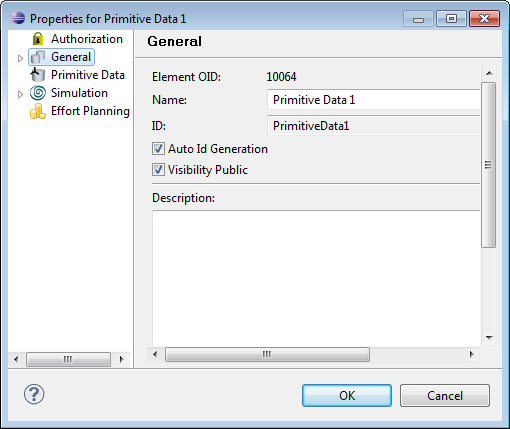
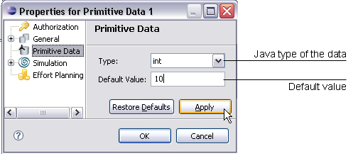
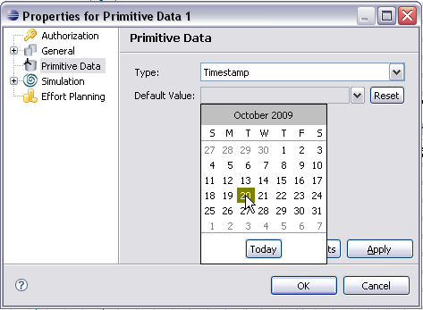
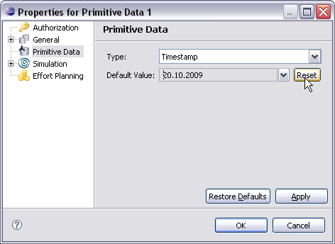

Primitive data are characterized by having a simple storage in the audit trail, allowing highly efficient retrieval and usage in queries. Their values are directly stored in the indexed fields string_value or number_value of the data_value table. The following primitive types exist:
Note
Please note that the type Calendar is deprecated as it
can cause problems in queries. Please use the type Timestamp
instead.
Note that the primitive Java types behave in method paths as their class equivalent wrapper types e.g. int behaves like a java.lang.Integer.
Primitive data have a default value which can be set when editing the data in the Process Workbench.
To specify a primitive data, create first a data as described in Specifying Data chapter, then open the data properties dialog.
Choose an ID and a name for the workflow data. Please note that IDs containing hyphens, blanks or dots and IDs starting with digits are not supported. If you select the Visibility Public check box, the data becomes visible and available for reference from any other model.

Figure: Data Properties Dialog for Primitive Data
In the Properties dialog, choose Primitive Data from the left pane. You can now set

Figure: Data Properties Dialog for Primitive Data
To choose values for Timestamp or Calendar (deprecated) data types, a calendar is provided to select the date from. Click the arrow on the right side of the Default Value entry field to open the calendar dialog and choose the date.

Figure: Choosing a Timestamp Value.
To clear the Default Value entry field, select the Reset button on the right side of the entry field as shown in the following screenshot:

Figure: Select Reset to clear the Entry Field.